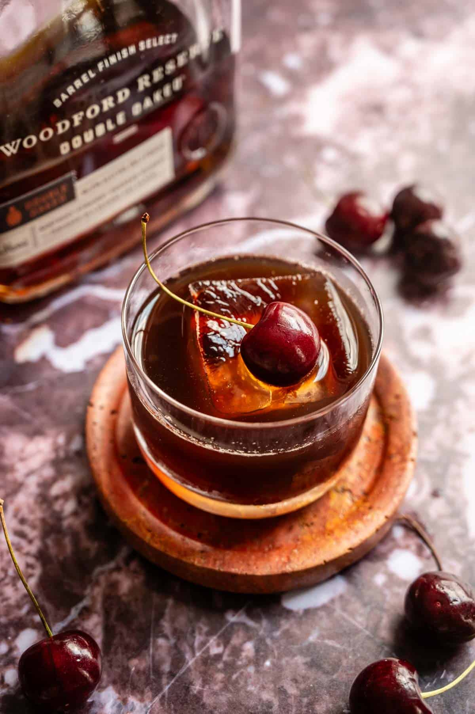

Cherry Old Fashioned

Description
This spiced cherry old fashioned is a cherry spin on the traditional old fashioned and combines cherries, brown sugar, and cinnamon and transforms it into a very drinkable bourbon cocktail!
Ingredients
Simple Syrup
- 2 cups pitted cherries (fresh or frozen)
- 1 cup brown sugar
- 3 cinnamon sticks
Cocktail
- 1 ½ ounces bourbon
- 1 ounce syrup
- 1 dash spiced cherry bitters
Steps
- Start by combining 2 cups pitted cherries, 1 cup water, 1 cup brown sugar, and 3 cinnamon sticks in a pot and cook until the cherries are soft (about 20 minutes). Remove from heat, let cool, and then strain.
- Then add ice to an old fashioned glass (or to a mixing glass), top with 1 ½ ounces bourbon.
- Top with 1 ounce of the syrup and 1 dash of spiced cherry bitters. Stir to combine.
- Garnish with fresh cherries
Home